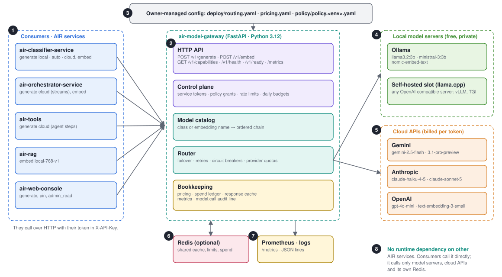
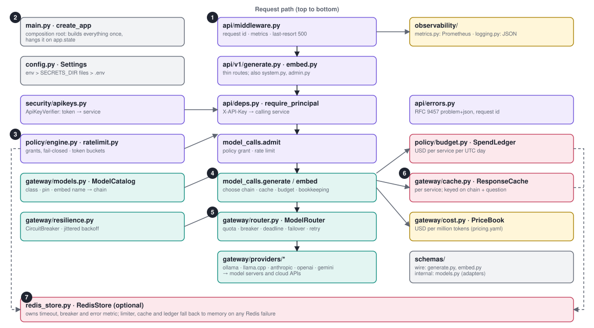
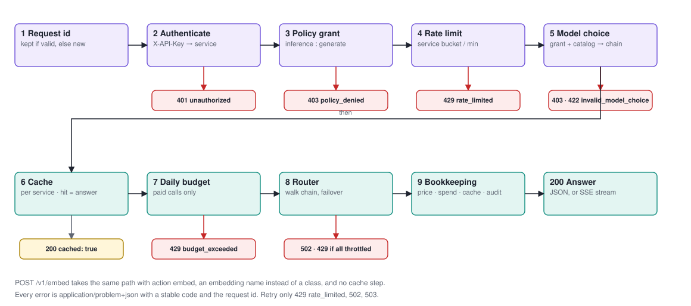
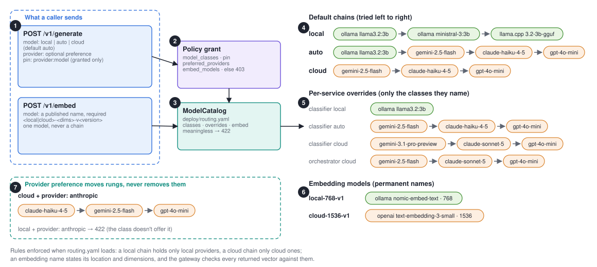
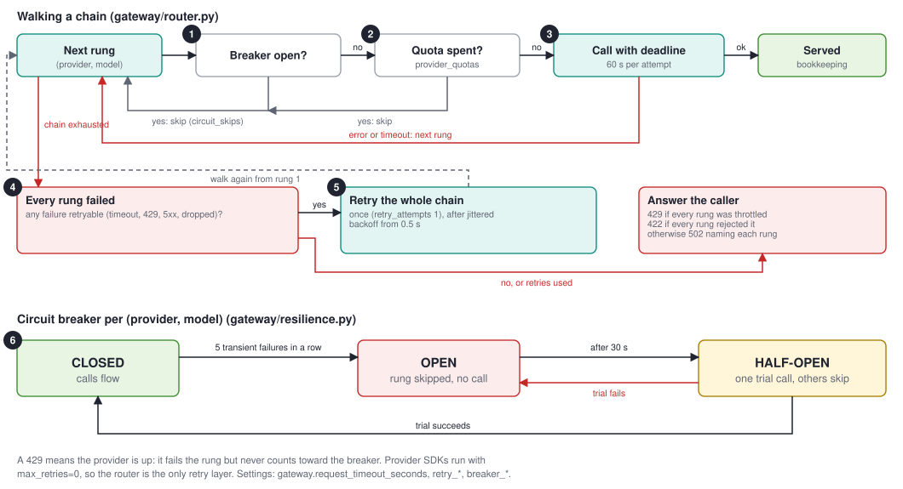
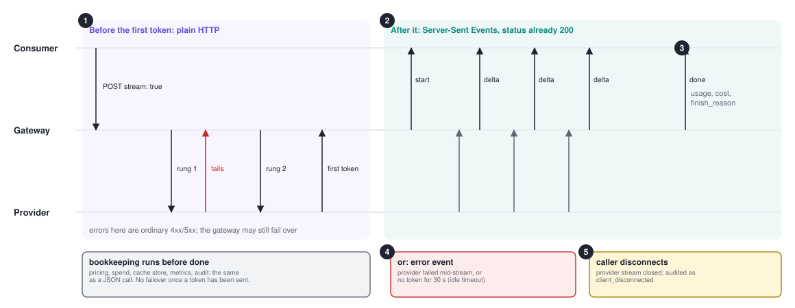
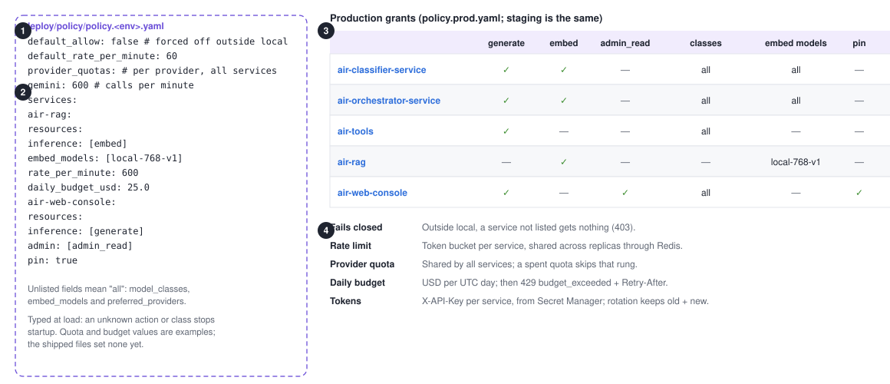
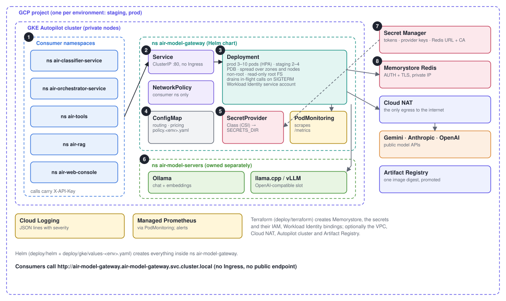
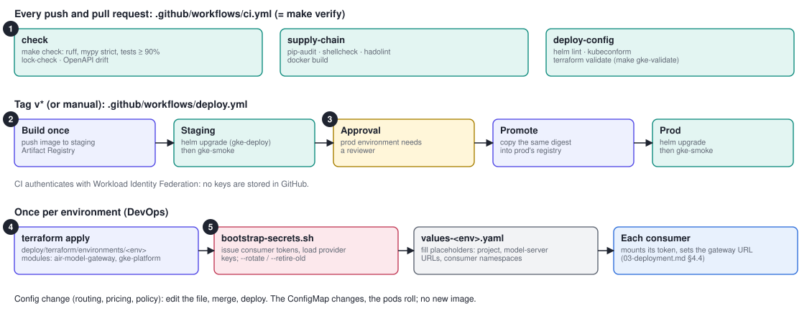
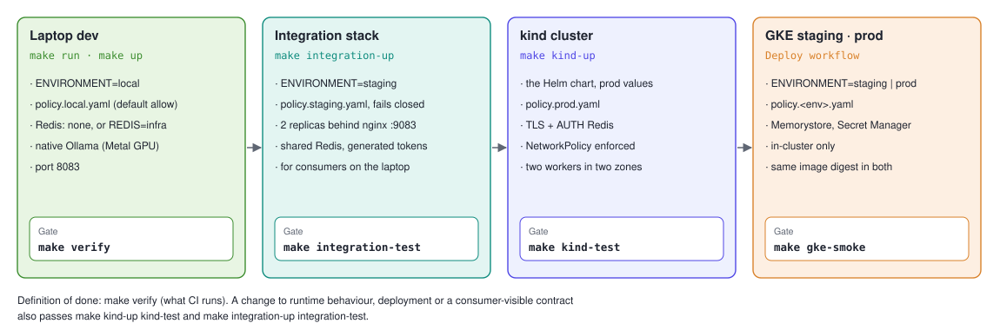

One HTTP service through which every AIR service reaches a language or embedding model:
POST /v1/generate for text (optionally structured JSON, optionally streamed) and
POST /v1/embed for vectors. Callers choose a model class
(local, auto, cloud) or a published embedding model
(local-768-v1), never a model name. The gateway owns everything else: which models
serve each class, failover, retries, circuit breakers, authentication, permissions, rate limits,
budgets, cost accounting, caching and observability.
Each page has one diagram and short notes. A numbered pin in a diagram points to the note with the same number. File paths are relative to the repository root. Colours mean the same on every page:
docs/overview.md | Team guide: every file, running, testing, troubleshooting |
docs/00-plan.md | Scope, decisions, future work |
docs/01-hld.md, 02-lld.md | High- and low-level design (win on disagreement) |
docs/03-deployment.md | GKE runbook for DevOps |
docs/04-integration.md | Guide for teams calling the gateway |
docs/05-handover.md | Assurance gates, risks, open items |
docs/openapi.json | The wire contract (generate clients from it) |
This document is generated from docs/design/
with make design; when the system changes, change the source and regenerate.

/v1/capabilities tells a caller what its classes mean; health and readiness serve probes.deploy/: an edit and a deploy, never a code release.local never leaves the network; auto tries local first.deploy/pricing.yaml. Cross-vendor chains survive one vendor's outage./metrics; one JSON model.call audit line per served call.src/air_model_gateway/ and how a request moves through themCode
api/v1/model_calls.py, so the two model routes can't drift apart.main.py::create_app builds every collaborator once and hangs it on app.state. Outside local it refuses to start without its config files and tokens.model_calls chooses the chain (catalog), checks the cache and the budget, runs the router, then prices, records spend, stores the cache entry and writes the audit line.ProviderError. Cloud SDKs load lazily.RedisStore; each user falls back to memory. /v1/ready reports Redis but never gates on it.POST /v1/generate, step by step, with every early exitRuntime
Everything cheap and local runs first: identity, grant, rate, choice, cache, budget.
A request refused here costs no provider call. Validation errors (unknown field, bad role, out-of-range
temperature) are 422 and never reach a provider.
The router walks the chain the catalog chose: per-attempt deadline, open breakers and spent provider quotas skipped, one jittered retry if a failure was transient. It returns 429 only if every rung was throttled; otherwise 502 naming each rung's error.
Price from pricing.yaml (local models are free), add to the service's daily
spend, store in the cache, count tokens and cost, write one model.call line: service,
operation, choice, provider, model, tokens, cost, cached, finish_reason.
deploy/routing.yaml decides the modelsRouting
model defaults to auto. provider is a preference, not a filter. pin names an exact model and stands alone.gateway/models.py turns an allowed choice into a chain. A choice that means nothing (unpublished name, provider not in the class) is 422.local stays on our servers; cloud uses cloud models only; auto is local first with cloud fallback./v1/capabilities shows each service its own chains.-v2) and a re-index.gateway/router.pyRouting
provider_quotas caps calls per minute to a provider across all services; over quota, the rung is skipped and the chain fails over.stream: true on /v1/generate answers with Server-Sent EventsRuntime
start, many delta, then done or error.content: id, model, provider, usage, cost, finish_reason.client_disconnected and not billed to the budget (usage is unknown).event: start
data: {"id":"…","model":"llama3.2:3b","provider":"ollama","cached":false}
event: delta
data: {"content":"Hel"}
event: done
data: {"id":"…","usage":{…},"cost_usd":0.0,"finish_reason":"stop",…}
Headers Cache-Control: no-cache and X-Accel-Buffering: no keep proxies from
buffering. A cache hit replays as one delta. Clients read with a read timeout above the
30 s idle limit, not a total timeout. EventSource can't POST: use fetch and read the body.

policy.local.yaml, policy.staging.yaml, policy.prod.yaml. Read at startup, shown read-only at GET /v1/admin/policy.inference: generate, embed; admin: admin_read), rate, model choices, pin, budget.tests/test_gateway_config.py: dropping a grant a consumer relies on fails the build.consumers and the GKE NetworkPolicy namespaces.docs/openapi.jsonIntegration| Route | Purpose |
|---|---|
POST /v1/generate | Text from messages; JSON or SSE |
POST /v1/embed | One vector per input text |
GET /v1/capabilities | Your classes, chains, grants |
GET /v1/health | Liveness (no auth) |
GET /v1/ready | 200 if any provider answers, else 503 |
GET /v1/admin/policy | Effective policy (admin_read) |
GET /metrics | Prometheus exposition |
X-API-Key | Your service token (required) |
X-Request-ID | Optional, ≤128 of A-Za-z0-9._:-; echoed and logged |
Retry-After | On 429 budget_exceeded |
src/air_model_gateway_client: generate, generate_stream, embed; reads
AIR_MODEL_GATEWAY_URL and AIR_MODEL_GATEWAY_TOKEN.
POST /v1/generate
{
"model": "auto", // local | auto | cloud
"provider": "anthropic", // optional preference
"messages": [
{"role": "system", "content": "…"},
{"role": "user", "content": "…"}
],
"max_tokens": 300,
"temperature": 0.2,
"json_schema": {…}, // optional
"schema_name": "verdict",
"cache_prefix": true,
"stream": false,
"cache": true
}
Stateless: send the whole history each call. Unknown fields are 422.
200: id, content, model_class, model,
provider, usage, cost_usd, cached,
refusal, finish_reason,
provider_finish_reason
POST /v1/embed
{"model": "local-768-v1",
"input": ["text a", "text b"]}
200: id, embedding_model, dimensions,
model, provider, embeddings,
usage, cost_usd
| Status · code | Meaning · action |
|---|---|
401 unauthorized | Missing or unknown token |
403 policy_denied | Not granted (operation, class, provider, pin, embedding model) |
422 validation_error | Body invalid; detail names each field |
422 invalid_model_choice | Choice means nothing here; see capabilities |
429 rate_limited | Retry with backoff |
429 budget_exceeded | Stop until Retry-After (next UTC day) |
502 provider_unavailable | Every rung failed; retry with backoff |
| 503 | Not ready; retry |
500 internal_error | Bug; report the request id |
stop, length (cut off at max_tokens: treat structured output as invalid),
refusal, other, the same for every provider.
cost_usd is 0 for local models and cache hits. Prices are USD per million tokens.

preStop plus a grace period lets in-flight calls finish.--set-file; a change rolls the pods without a new image.SECRETS_DIR; nothing secret in Kubernetes or GitHub.deploy/gke/bootstrap-secrets.sh loads and rotates them.
prod GitHub environment requires a reviewer; promotion copies the exact digest staging tested.--rotate, then --retire-old) with no downtime.
Lint, mypy strict, tests with a 90% coverage floor, OpenAPI drift, lock freshness, dependency audit, shellcheck, hadolint, chart and Terraform validation. Exactly what CI runs.
integration-test and kind-test make real calls per grant:
401 for an unknown token, 200/403 per grant, pins, embedding names, streaming, readiness, Redis, and (kind) the
NetworkPolicy block. gke-smoke runs the same checks inside GKE after each deploy.
Prefix AIR_MODEL_GATEWAY_, __ for nesting
(AIR_MODEL_GATEWAY_OLLAMA__BASE_URL). Env beats SECRETS_DIR files beats .env.
.env.example documents every key.
air_model_gateway_)requests_total | route, method, status |
model_tokens_total | provider, model, kind |
model_cost_usd_total | provider, model |
service_cost_usd_total | by calling service |
model_unpriced_total | model missing from pricing |
provider_timeouts_total | attempts past the deadline |
chain_retries_total | extra passes over a chain |
circuit_skips_total | rungs skipped, breaker open |
circuit_open | 1 while a breaker is open |
provider_quota_rejected_total | rungs skipped, quota spent |
ratelimited_total | requests over the rate |
budget_rejected_total | requests over the budget |
redis_errors_total | degraded to memory |
streams_total | completed, error, client_disconnected |
{
"event": "model.call",
"service": "air-rag",
"operation": "embed",
"model_choice": "local-768-v1",
"provider": "ollama",
"model": "nomic-embed-text",
"tokens": 42, "cost_usd": 0.0,
"cached": false, "finish_reason": null,
"request_id": "…", "severity": "INFO"
}
JSON lines with a Cloud Logging severity. Filter on service, model or
request_id; a caller's X-Request-ID ties its logs to the gateway's.
circuit_open == 1 for 5 min | A model is down |
rising redis_errors_total | Running degraded |
model_unpriced_total > 0 | A model has no price |
5xx share of requests_total | Chains exhausted |
| Symptom | Look at |
|---|---|
| 502 naming every rung | Model servers up? Keys set? /v1/ready, breaker metrics |
| 403 on a call | The service's entry in policy.<env>.yaml; /v1/capabilities |
422 invalid_model_choice | Name not published, or provider not in the class |
429 budget_exceeded | daily_budget_usd; resets at 00:00 UTC |
| Slow answers | provider_timeouts_total; a slow first rung; Ollama loaded at the right context |
| Answers changed after a deploy | The class's chain in routing.yaml; tune one service with overrides |
| Pod not ready | No provider answers; Redis never blocks readiness |
Full table: docs/overview.md §9. Runbook: docs/03-deployment.md §5.
air-model-gateway/ ├─ src/air_model_gateway/ │ ├─ main.py composition root │ ├─ config.py settings │ ├─ api/ middleware, routes, │ │ model_calls, errors │ ├─ gateway/ catalog, router, │ │ │ resilience, cache, cost │ │ └─ providers/ one adapter each │ ├─ policy/ engine, ratelimit, budget │ ├─ security/ service tokens │ ├─ schemas/ wire + internal contracts │ └─ observability/ metrics, logging ├─ src/air_model_gateway_client/ ├─ tests/ one file per concern ├─ deploy/ │ ├─ routing.yaml pricing.yaml policy/ │ ├─ helm/ gke/ terraform/ │ └─ local/ integration, kind, prometheus ├─ docs/ PDF, guides, contract └─ Makefile Dockerfile docker-compose.yml
| Change | Where · how |
|---|---|
| Which models serve a class | deploy/routing.yaml · edit, deploy |
| A price | deploy/pricing.yaml · edit, deploy |
| A grant, rate, budget, quota | deploy/policy/policy.<env>.yaml · edit, deploy |
| A new embedding model | New name in routing.yaml; consumers re-index |
| Infrastructure | deploy/terraform · plan, apply |
| Chart or values | deploy/helm, deploy/gke · make gke-validate kind-up kind-test |
| Wire contract | schemas/ · make openapi, client, integration guide |
| A provider | Adapter, Provider member, wiring, prices, tests |
| A dependency | pyproject.toml · make lock verify |
Checklists for each: AGENTS.md "Change checklists".
| Standalone | No other AIR service at runtime. |
| Classes, not models | Callers state intent; the owner picks models. |
| Config, not code | Models, prices and grants change without a release. |
| Fail closed | Outside local, nothing is allowed unless granted. |
| Degrade, never fail | Redis is optional; every user falls back. |
| One retry layer | The router; SDK retries are off. |
| Stateless | No conversations kept; callers own history. |
| One contract | docs/openapi.json, checked against the code. |
make design redraws docs/design/diagrams/*.svg from diagrams.py and prints
docs/design/design.html to docs/air-model-gateway-design.pdf (needs Google Chrome).